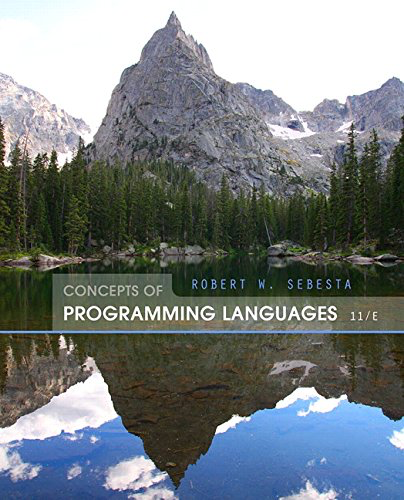

Syllabus
Professor
Dr. Kevin Lillis
429 Ambroseweb.sau.edu/LillisKevinM
LillisKevinM@sau.edu
563-333-6429
Office Hours
I am in my office Monday through Friday during the day. My door is always open. Please feel free to stop in any time. You can also make an appointment to meet with me at a specific time. Here are my official office hours:
| M W | 2:00 — 2:30 |
| W | 9:00 — 12:00 |
| T Th | 2:00 — 2:30 |
Course Description
This course studies the theoretical aspects of programming languages. Topics include general syntax and semantics, axiomatic semantics, context free grammars, regular expressions, finite automata, Turing machines, and parameter passing. Imperative, Functional and Logic programming paradigms will be explored.
Objectives
Upon completion of this course students will be able to:
- Identify the different ways of evaluation and comparing programming languages
- Distinguish between the syntax and semantics of a programming language
- Create a formal grammar for a programming language
- Explain how parsers operate and how they relate to parse trees
- Distinguish between parsing and lexical analysis
- Use axiomatic semantics to prove partial program correctness
- Describe the different parameter passing mechanisms
- Explain the relationships among regular expressions, context free languages, finite automata, and Turing machines
Prerequisites
CSCI 185 or CSCI 195
Schedule
The class meets on Tuesdays and Thursdays from 9:25 to 10:40 in room 007 of McMullen Hall. There will be no class on the following days:
- Tuesday, November 24
- Thursday, November 26
Required Textbook
Concepts of Programming Languages, 11th Edition
|
Robert Sebesta © 2016 by CRC Press ISBN: 978-0133943023 Available at: Bookstore Amazon.com |
 |
Class Web Site & Blackboard
A class web site has been created for this class. A link to the class web site can be found at web.sau.edu/LillisKevinM. Students should check the class web site regularly throughout the semester. The Blackboard course management system (blackboard.sau.edu) will be used to post grades for this class. All other course information will be provided through the class web site.
Communicating with Me
You are welcome to ask me questions by e-mail. I will try to answer your e-mails within 12 hours from the time they are received. You should make sure to include "CSCI-400" in the subject line to help me get to your e-mail quickly. I will occasionally send e-mail announcements to all students in the class and you are responsible for all official correspondence sent to your St. Ambrose address (@sau.edu). Make sure that you check this e-mail account regularly. I would also prefer receiving e-mails from your sau account, rather than from commercial e-mail providers such as hotmail, gmail etc. I will try to call you by your preferred name. As a matter of professionalism, I’d prefer you call me "Prof. Lillis" or "Dr. Lillis". I will insist that we all start our e-mails with the recipient’s name (not "Hey" or just blank) and end our e-mails with the sender's name.
Methods of Evaluation
There will be a midterm exam, a comprehensive final exam, and regular homework assignments.
Midterm Exam The midterm exam is open book open notes.
Final Exam The final exam is comprehensive and includes all topics covered during the semester. This is an open book, open notes.
Homework Assignments Each assignment will be given a date and a time when the assignment is due. You are expected to complete all assignments on time.
Language of the Week (LotW) From October 8 through November 19, the last 45 minutes of each Tuesday class will be devoted to learning about a different, usually non-mainstream, language. Each language will be covered by a small grouop of students (2 - 3) who work together to present the unique features of the language through handouts, demonstrations, and hands-on exercises. At the end of the presentation, a programming exercise using the language will be assigned to the class by the presenters. This assignment will be due by the following Sunday night at 11:59 p.m.
Attendance Attendance is mandatory. You are expected to attend all classes and to arrive on time. Missed lectures are the responsibility of the student.
Make-Up Policy
Exams Make-up exams will only be given in the event of a documented excused absence (for example, medical absences required a signed note on letterhead paper from your doctor.) You must notify me of an excused absence within 48 hours after the missed exam or no make-up will be allowed. Normally make-up exams are somewhat more difficult that the original exam.
Homework Assignments A late assignment will be accepted only up to the time when I start to grade that particular assignment for the class. At that time the homework assignment will no longer be available on Blackboard.
Academic Integrity
You are encouraged to discuss homework and other parts of the class with other students. Such discussions about ideas are not cheating, whereas the exchange of finished, written answers is cheating. Never give finished answers to someone else or use someone else’s finished answers. Plagiarism and cheating are both considered grounds for a failing grade for that particular piece of work. Furthermore, they would weigh heavily in the final grade, possibly resulting in a failing grade for the entire course. Please see the St. Ambrose Academic Integrity Policy for further details.
Grading
| Homework | 27% |
| Language of the Week | 15% | Midterm Exam | 29% |
| Final Exam | 29% |
Letter grades will be assigned based on the following:
| Grade | Minimum Score | Grade | Minimum Score | Grade | Minimum Score | Grade | Minimum Score | A+ | 97 | B+ | 87 | C+ | 77 | D+ | 67 |
| A | 93 | B | 83 | C | 73 | D | 63 |
| A- | 90 | B- | 80 | C- | 70 | D- | 60 |
In determining borderline grades, I reserve the right to consider perceived student initiative and class participation.
An incomplete will be given only when a student meets the requirements of the latest St. Ambrose University policies. Earning a low grade is not a valid reason for an incomplete.
Classroom Decorum
This is mainly a lecture course with a substantial amount of work required outside of class. Occasionally you may be given class time to work on your programs.
All reading is to be completed prior to the class in which the material is to be covered. Students are expected to participate in class discussions. I will not repeat material in class that you could have learned by reading.
Students are asked to arrive on time for class. If you do arrive late, please be quiet and unobtrusive when taking your seat so as not to distract from the ongoing lecture.
Please do not talk during class meetings. Talking is distracting and makes it difficult for others to hear.
Please do not read or view unassigned materials (novels, newspapers, magazines, etc). This is also distracting and disruptive.
Please do not bring food to class.
Please do not use electronic devices (laptops, cell phones, MP3 players, etc.) during class. If you use an electronic device during class for anything other that taking notes (with my permission) I will ask you to turn it off. If the problem persists you may be asked to leave class. Please silence your cell phone prior to class. If your cell phone rings, I will answer it for you. You do not want this to happen.
During lectures you are not allowed to use the lab computers unless directed to do so. If I see you using a lab computer during lecture time I will turn the computer off for you, without saving your work first.
Students with Disabilities
Students with disabilities who believe that they may need accommodations in this class are encouraged to contact Student Disability Services at 333-6275 as soon as possible to better ensure that such accommodations are implemented in a timely fashion. Students may also want to visit SDS on line at: http://www.sau.edu/Student_Disability_Services.html.
How to Succeed in this Class
Attend Class Showing up on time for every class is the easiest way to improve your grade — not merely because of the credit for attendance, but also because of exposure to the content presented in class.
Level of Effort Normally a student can expect to spend about two hours of work, outside of class, for each credit unit. Thus a typical expected workload would be about six hours per week outside of class. This is not a course where students read or write essays. Most of your time will be spent experimenting with programs and studying programming language conventions and techniques to understand concepts.
Prepare for Class Read the chapter sections ahead of time for each class. When reading the textbook, enter and compile as many of the sample programs as possible. You may be surprised at how much this reinforces the chapter material. Reading ahead of time will make it easier to follow the lecture and it will help you decide what to ask about in class. Unless asked, I will not repeat material in class that you could have learned by reading.
Do the Homework Start working on the homework problems as soon as possible. Often, a problem that stumps you one day will seem obvious a day later. You should view the homework assignments as preparation for the exams. It is imperative that you understand and complete the homework.
Manage Your Time I encourage you to develop a system to actively manage you priorities and time. You should schedule time each week to complete assignments and to complete readings in advance of class. Effective time management will help you not only in this class but also in the rest of your studies and in your career. Poor time management and late completion of assignments will be detrimental to your learning experience and will be reflected in your grade for the class.
Stay Organized Organize your class notes and save all of your graded homework assignments. These will be a great resource when studying for the exams. Also be sure to keep your computer files organized. You will write a plethora of programs for this class; it is easy or them to quickly become disorganized.
Visit Me If you have problems during the semester that affect your coursework, please see me as soon as possible so we can discuss your options for the course. If you find yourself falling behind in the class, please see me. It is likely we can work together to get you back on track.
Visit the Student Success Center If you feel you need additional support for this class, you are encouraged to go to the Student Success Center in Ambrose Hall 243 or to call 333-6631 for information regarding tutoring in this class. The SSC provides free peer tutoring for most 100 and 200 level courses, writing tutorials for papers in all classes, and study strategy advice. Supplemental Instruction and study groups are also available in some classes. The center staff suggests that students seek help early, although drop in and contractual tutorials are arranged throughout the semester.
Ask for Help From the Source of All Knowledge There is a prayer written By St. Thomas Aquinas over 700 years ago. This prayer help me immensely when I was studying for my Ph.D. I thought it might help you in your studies as well. It is called the Prayer Before Study:
Prayer Before Study
Creator of all things,
true source of light and wisdom,
lofty origin of all being,
graciously let a ray of your brilliance
penetrate into the darkness of my understanding
and take from me the double darkness in
which I have been born,
an obscurity of both sin and ignorance.
Give me a sharp sense of understanding,
a retentive memory,
and the ability to grasp things correctly and fundamentally.
Grant me the talent of being exact in my explanations,
and the ability to express myself with
thoroughness and charm.
Point out the beginning, direct the progress,
and help in completion;
Through Christ our Lord.
Amen.
~Saint Thomas Aquinas